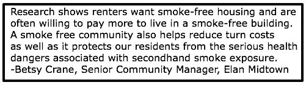

Smoke Free Housing
Smoke-Free Policies in Multi-Unit Housing
Smoke-Free Policies are Legal!
Smoke-free building policies can limit your liability as a property owner or manager. Residents with health issues that are caused by or exacerbated by secondhand smoke may pursue legal action against their property owners or managers if appropriate steps are not taken to resolve the problem. (9)
Property owners and managers can legally adopt smoke-free policies! Resources, such as sample lease addendums to specify a no-smoking policy are available by calling us.
According to the U.S. Surgeon General, there is no safe level of secondhand smoke exposure. (1) Eliminating indoor sources of secondhand smoke is the only way to protect non-smokers from the harmful effects of tobacco smoke.
Even if tenants don't smoke, secondhand smoke can still enter into their units through vents, doors, windows, and shared hallways.
Among the 616,000 multi-unit housing residents in South Carolina, it is estimated that 206,000- 216,000 of them are involuntarily exposed to secondhand smoke in their unit. (2)
A recent survey of Charleston, South Carolina apartment residents found that the majority (66%) did not allow smoking inside their unit. However, about one-third of these individuals reported experiencing secondhand smoke exposure infiltrating into their unit from elsewhere in or around the building. (3)
Of those experiencing secondhand smoke exposures, over 40% reported these exposures occurred daily or a few times a week. (3)
A recent study found that costs in properties that allow smoking everywhere were nearly double that of smoking- related costs incurred at smoke-free properties. (4)
Compared to smoke-free units, cleaning and refurbishing costs can be up to $3,000 more in units with heavy smoking. (5)
Nationally, smoking related fires result in over $300 million in property loss each year. (6)
Allowing smoking in your building can increase the risk of fire. An estimated 7,600 smoking-related fires occur in residential buildings each year in the US. (6)
Fires caused by smoking are the leading cause of fire deaths, accounting for 14% of fire deaths in residential buildings. (6) Smokers are not the only victims of such fires. Casualties of smoking-related fires often include the children, friends, and neighbors of the smoker who caused the fire. (7)
Charleston residents want smoke-free housing policies.
Approximately 80% of Charleston, SC apartment residents currently residing in smoking-allowable buildings indicated that they would not move out of their current residence if it were designated as smoke-free. (3)
In fact, many of these residents indicated that they would be willing to give up other amenities in order to live in a smoke-free building, such as a shorter commute time to work and other local services. (3)
A recent survey of Berkeley County residents indicates many favor smoke-free multi-unit housing. You can view the survey here.
65% of Charleston, SC apartment residents would prefer to have a policy in their building that prohibited smoking in all indoor areas. However, only 9% of apartment residents in this survey reported living in a smoke-free building. (3) A recent national survey found that nearly 30% of multiunit housing residents live in smoke-free buildings, far higher than the estimates in Charleston. (8)
High support for such policies along with the low prevalence of current smoke-free policies could result in a large market opportunity for multi-unit housing operators who implement smoke-free policies in your area.
400 Meeting Street
Archdale Commons
Bees Ferry Apartment Homes
Bolton's Landing
Elan Midtown
Flats at Mixson
Gregorie Ferry Landing
Paces Watch
Parkway Village (Summerville)
Talison Row
Waverly Place
Click here for a full list of smoke free apartments in the tri county area

Additional Links and Information About Smoke Free Housing
Smoke Free Housing FAQ
Benefits of Smoke Free Housing
Asthma and Tobacco Smoke in Your Home
Reasons to Consider Smoke Free Housing
Americans for Nonsmokers' Rights
The Smoker Next Door - Explains options and provides ideas for how to work with smoking neighbor and landlord to create a smokefree living space.
Cost Differences to Rehabilitate Units
Thirdhand Smoke in Apartments and Condos: Recommendations for Landlords and Property Managers
Advice for Enforcing a Smokefree Housing Policy
Secondhand Smoke: The Science
Health Effects of Secondhand Smoke on Children
Smokefree Multi-Unit Housing
Are you a landlord or management company with questions and concerns about tenants smoking in your buildings?
References:
- http://www.surgeongeneral.gov/library/reports/secondhandsmoke/factsheet7.html;
- King BA et al. Nicotine & Tobacco Research, 2013; 15(7):1316-1321;
- Roswell Park Cancer Institute. Preferences and practices regarding secondhand smoke exposure and smoke-free policies in multi-unit housing: A survey of multi-unit housing residents living in Charleston, South Carolina, 2012.
- Ong MK et al. American Journal of Public Health, 2012; 102(3):490-493.
- nchh.org/Portals/0/Contents/NCHH_Green_Factsheet_smokefree.pdf.
- US Fire Administration. Smoking-related fires in residential buildings (2008-2010), June, 2012.
- http://www.usfa.fema.gov/campaigns/smoking/cbo/index.shtm
- Licht AS et al. American Journal of Public Health, 2012. 102(10):1868-1871.
- http://www.tcsg.org/sfelp/home.htm
Latest News
2017 Annual Meeting
Charleston Toolkit Survey
P&C Quit and Win Contest
Tips From Former Smokers
Berkeley Tobacco Survey
Quit for Keeps

Smoke Free Housing

Winners Always Quit

SC Quits

For more information please contact us at smokefreelowcountry@yahoo.com
Smoke Free Lowcountry
P.O. Box 3174
Summerville, SC 29484-3174
Call or Text us at: 843-588-5087
Fax: 843-797-8638
Call or Text us at: 843-588-5087
Fax: 843-797-8638